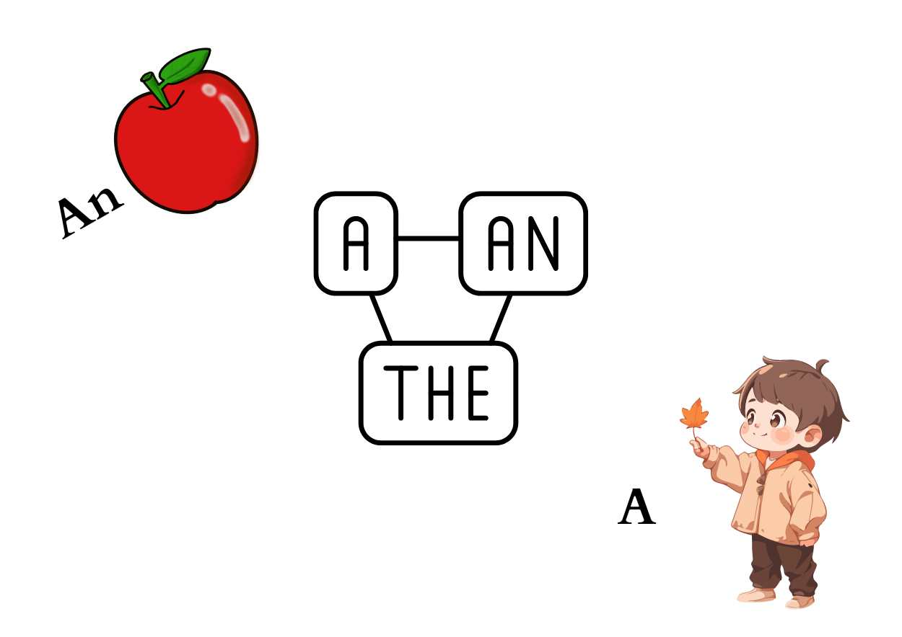

We often notice the following sitting in front of nouns or their equivalents in a sentence:
● A
● AN
● THE
They are called articles , and they are grouped under the part of speech called: DETERMINERS